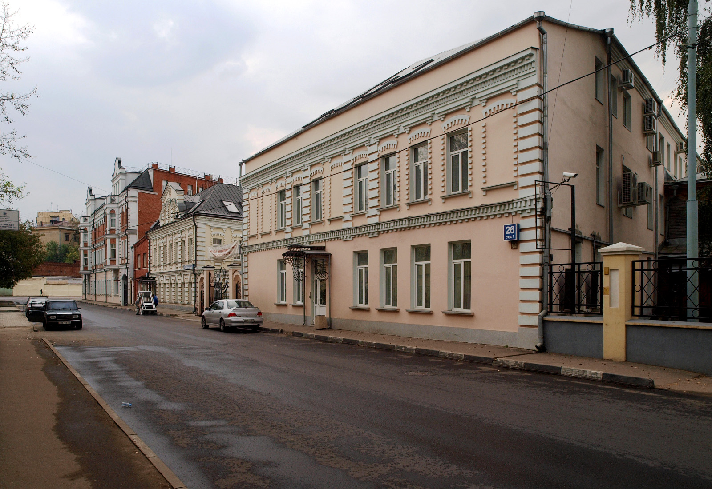
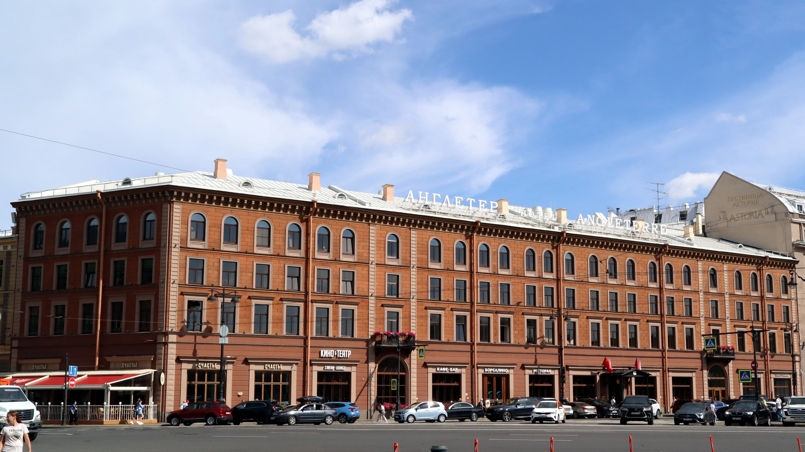

По Есенинским местам
Литературный путеводитель к 130-летию поэта
Введение
Сергей Александрович Есенин — ключевое имя в русской литературе XX века. Его поэзия, проникнутая любовью к родине и природе, стала частью культурного кода России. В 2025 году мы отмечаем 130 лет со дня его рождения, и этот проект — способ прикоснуться к истории через места его жизни.
Путь поэта
1895: Родился в селе Константиново Рязанской губернии в крестьянской семье.
1912: Переезд в Москву, работа в типографии и первые шаги в литературе.
1915: Встреча с Александром Блоком в Петрограде, которая открыла двери в большую поэзию.
1919-1925: Период имажинизма, путешествия по Кавказу и Средней Азии, создание великих лирических циклов.
География памяти
Константиново
Родина поэта. Здесь расположен Государственный музей-заповедник, где сохранился дом его семьи и земская школа.
 Место для фото Москвы
Место для фото Москвы
Москва
Город становления. Главный адрес — Большой Строченовский переулок, где Есенин жил и работал в типографии Сытина.

Место для фото МосквыПетроград (Ленинград)
Город триумфа и трагедии. Здесь поэт получил признание элиты и здесь же завершился его земной путь в 1925 году.

Место для фото МосквыВосточный маршрут: Ташкент и Баку
Поездки в Среднюю Азию и Закавказье обогатили поэзию Есенина новыми образами и восточными мотивами.